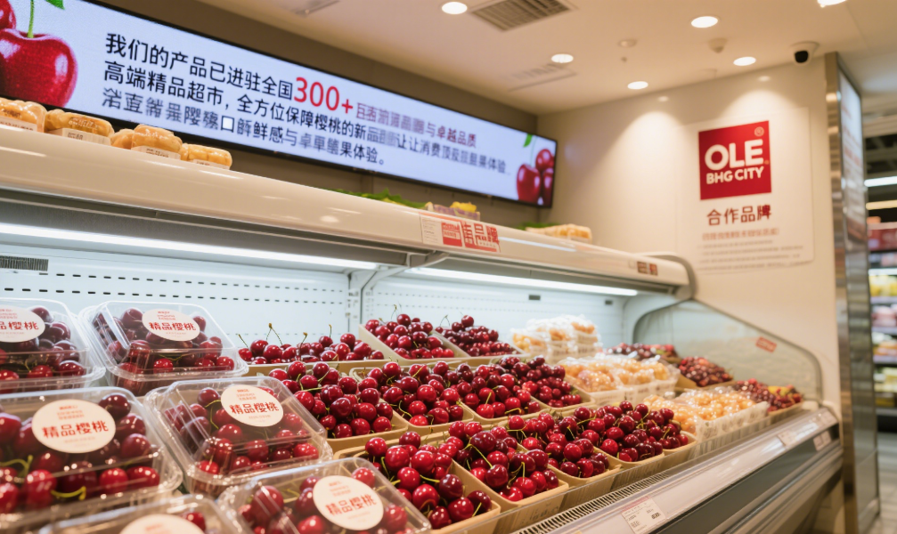
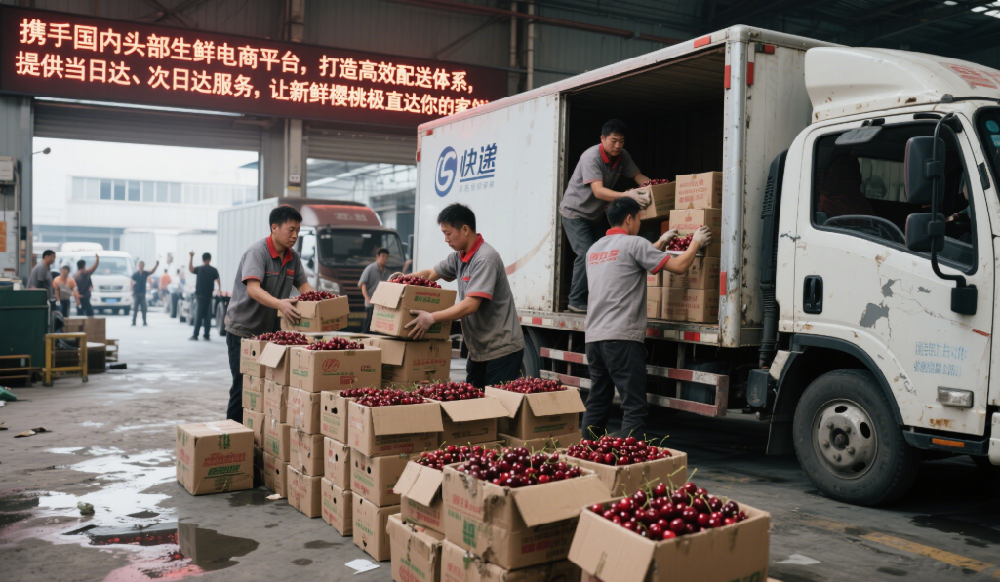
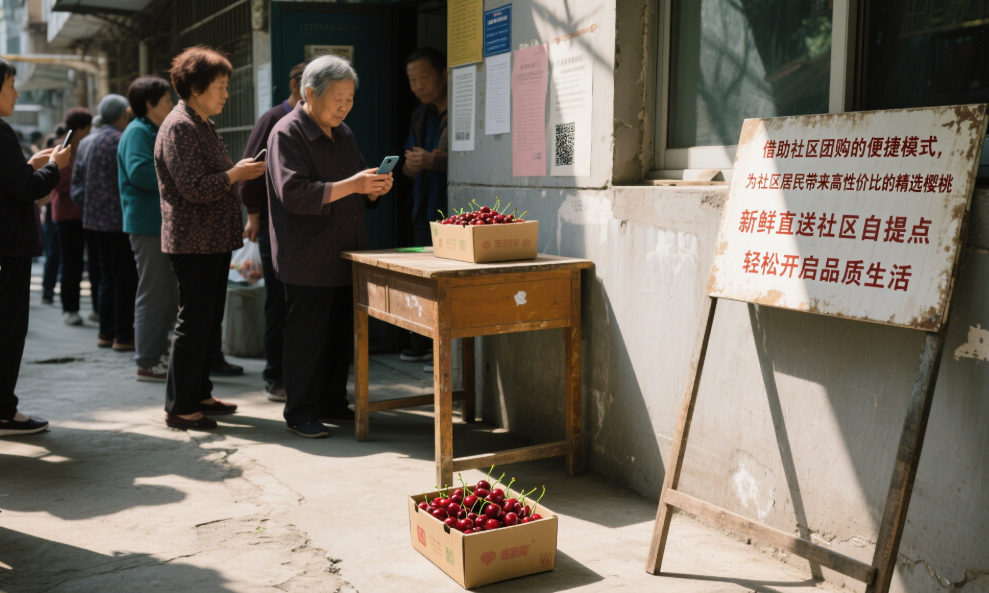
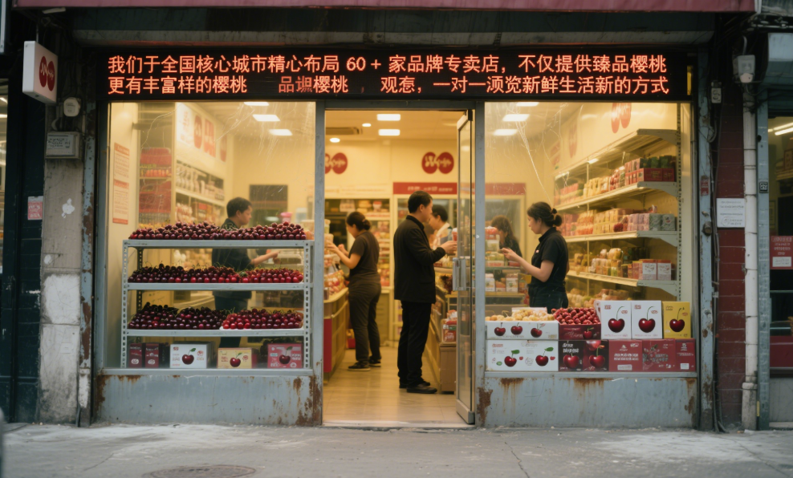

新鲜直达
销售环节
我们通过多种渠道将新鲜樱桃送到您的手中，每一颗都经过严格筛选，确保品质如一。

精品超市
我们的产品已进驻全国 300 + 高端精品超市，配备专业冷藏陈列区，全方位保障樱桃的新鲜口感与卓越品质，让消费者畅享顶级鲜果体验。
合作品牌：
OLE
BHG
City

生鲜电商
携手国内头部生鲜电商平台，打造高效配送体系，提供当日达、次日达服务，让新鲜樱桃极速直达您家。
合作平台：
盒马
美团
京东

社区团购
借助社区团购的便捷模式，为社区居民带来高性价比的精选樱桃，新鲜直送社区自提点，轻松开启品质生活。
合作平台：
多多
美团
兴盛

品牌门店
我们于全国核心城市精心布局 60 + 家品牌专卖店，不仅提供臻品樱桃，更有丰富多样的樱桃衍生产品，邀您一同领略新鲜生活新方式。
覆盖城市：
北京
上海
广州
消费者评价
陈先生
“第一次买这个品牌的樱桃，简直惊艳！果肉脆嫩多汁，酸甜度恰到好处，咬开还能闻到清新的果香。冷藏陈列区的保鲜做得很专业，樱桃颗颗饱满新鲜，包装也很有质感，送礼体面又上档次！”
购买渠道：精品超市
周女士
“在生鲜电商平台下单的樱桃，没想到这么快就收到了！泡沫箱 + 冰袋的双重包装，拆开后樱桃完好无损，跟刚摘的一样新鲜。家里孩子每天吵着要吃，酸甜口味很开胃，已经回购第三箱了！”
购买渠道：生鲜电商
赵先生
“参加社区团购活动买的樱桃，性价比真的绝！价格比超市便宜近一半，送来的樱桃却特别新鲜，个头均匀饱满，甜度也高，家里老人都说比市场买的好吃。已经推荐给小区邻居们了！”
购买渠道：社区团购